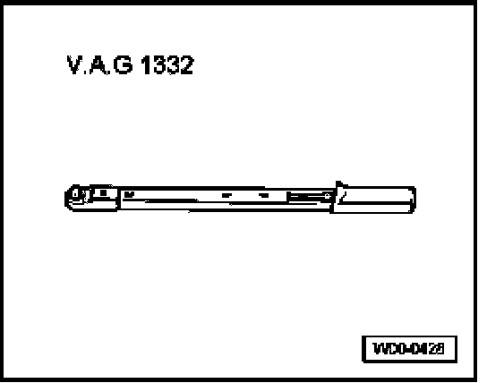
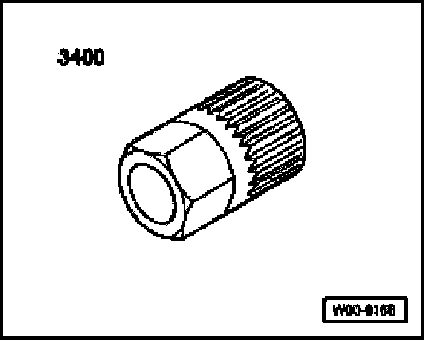
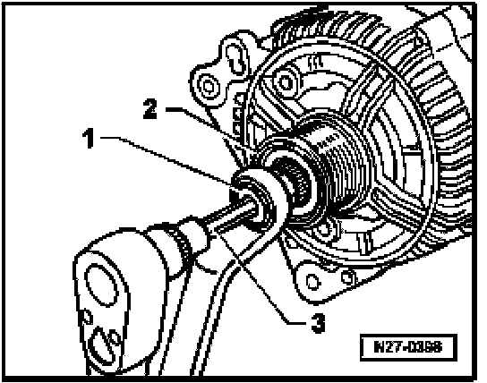
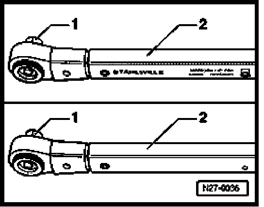
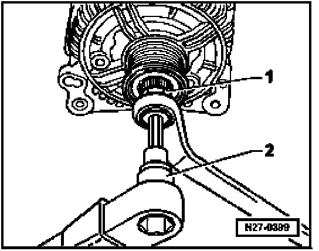

Alternator Pulley / Clutch: Service and Repair
Generator (GEN) Ribbed Belt Pulley - 6- Cyl. Engine, Replacing
Special tools, testers and auxiliary items

- VAG 1332 Torque wrench (or 40 - 200 Nm equivalent)

- 3400 Multi-tooth adapter
Removing
- Remove generator.
- Clamp generator on bracket points in bench vise.
- Remove protective cap from freewheel pulley.
NOTE: Thread on generator shaft is left-handed. Turn clockwise to loosen. Turning counter-clockwise to tighten.

- Insert multi-tooth adapter 3400 -1- with 17 mm wrench into freewheel pulley -2-. Then insert socket head wrench M10 -3- into generator shaft.
- Loosen threaded connection by turning clockwise while counterholding with wrench.
- Hold freewheel pulley firmly by hand and turn generator drive shaft until freewheel pulley can be removed.
Installing
Install in reverse order of removal, noting the following:
- Screw freewheel pulley by hand onto generator shaft onto stop.
The torque wrench must be rearranged before installing the freewheel pulley as follows:

- Release socket drive -1- and pull off grip -2-.
- Turn torque wrench grip -2- through 180 degrees and reinsert socket drive.
- Set wrench direction of turn on socket drive to counter-clockwise.

- Counter-hold multi-tooth adapter 3400 -1- with 17 mm wrench and tighten freewheel pulley to 80 Nm by turning generator drive shaft counter-clockwise with torque wrench -2-.
- Clip protective cap onto freewheel pulley.